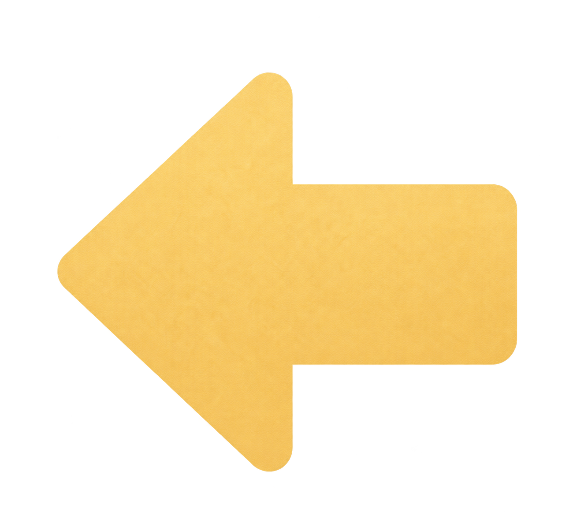

牛顿望远镜 · 动效方案
镜座与镜片，一起自然换场
查看完整切换规范 ↗
A · 原位淡换
200ms · 简短、稳定，保持空间位置
B · 定向轻滑
已选用
300ms · 托盘随翻页方向轻移
C · 分组错峰
380ms · 仪器先就位，光路再出现
牛顿望远镜实验
MIRROR OPTICS
1
切换方案预览

切换到透镜 →
重播向右切换
2 倍慢放
减少动态效果
反射镜 · 就绪
点击场景中的金色箭头或上方按钮。此页用于比较三版切换；镜片拖放与课程操作请返回
实验页面
。